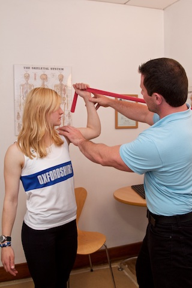
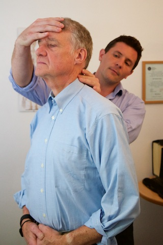

The initial treatment is about finding out what's wrong and providing immediate pain relief for you. To do this, a medical history is taken, functional movement screening and orthopaedic testing may be done. The findings are discussed with you to let you know what the issue is and how we can proceed together to get you out of the immediate pain and to improve long-term health.
Treatment would then generally consist of a combination of soft tissue work, mobilisation and stretches. High velocity thrusts (the "clicking" or "popping" osteopaths and chiropractors are know for), kinesio-taping and dry needling may also be offered, depending on your needs.
You may also be given stretches, mobilisations, exercises or nutritional advice to work on away from the clinic.
The follow-up treatments are about keeping you out of pain, correcting the reasons that led up to and aggravated the injury and showing you how to prevent it happening again.
The number of treatments you need depends on you and the conditions you have. My aim is to treat you in as few treatments as possible or to refer you to someone else if I think they would help you more. The reasons for this are fairly straightforward.
From a business point of view, people are happier to refer their friends if they are treated swiftly and effectively.
From a personal point of view, I enjoy the challenge of helping people as swiftly and effectively as possible. I'm a little bit of a geek like that but I think that works out well for everyone! What this means is that someone with lower back pain could come in for soft tissue manipulation,
Please wear comfortable, loose fitting clothing that can be rolled up or moved around. Treatment is generally through clothes, however occasionally you may be asked to change down into underwear so please bring something you are comfortable in. Occasionally it might be helpful to look at your shoes, especially running shoes, so you may be asked to bring them in when we arrange the initial appointment or after the first treatment.
The initial consultation and treatment is 45 minutes but may be longer with prior agreement. All follow-up sessions are 30 minutes.
Each treatment is £65.
It is a good idea to get treatment as soon as you can. Early treatment may mean quicker recovery, with less time off work or out of training.

